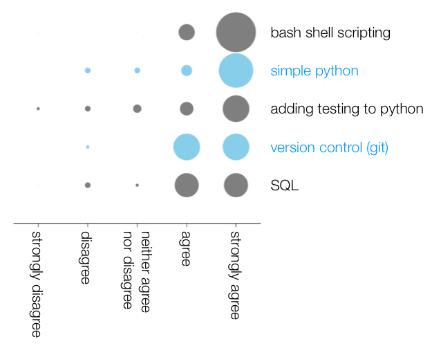
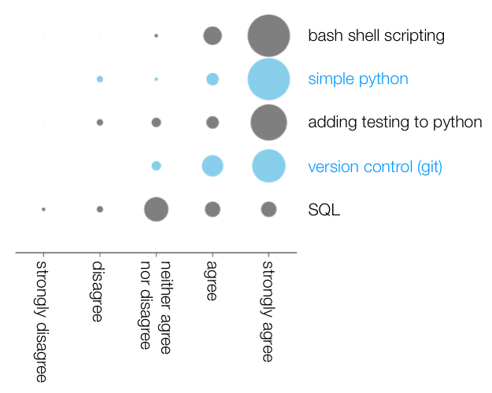

The Wellcome Trust Centre for Human Genetics at the University of Oxford hosted its first Software Carpentry workshop on 13th and 14th January. Here's the feedback from one of the instructors and the co-organiser Philip Fowler , Software Sustainability Institute Fellow and postdoctoral researcher at the Department of Biochemistry at the University of Oxford.
Originally blogged by Phil on his blog and then republished by Simon Hettrinck on the SSI blog.

So how did the workshop go? I’m a bit biased, so to get a better idea I sent the participants a similar questionnaire to the one I sent to the Software Carpentry workshop I organised previously.
Nearly all the participants (95%) agreed that "I enjoyed the Software Carpentry workshop" which is great, but I guess the aim is to help people change how they use computers to do research. Asking whether "I now understand enough to try using the following tools/approaches" gives a more nuanced view (see the graph on the left). Everyone seemed to understand shell scripting, but we can't take all the credit as quite a few people would have known bash before. In fact, all the different elements of the syllabus were well understood, which shows the course and materials were doing a good job.
How about "I intend using the tools and methods listed below to help my research". Now we start to see some differences.Most people intend to use shell scripting and Python, maybe fewer people will pick up testing and git, with only about half the participants thinking they would use SQL. Still, a good result.
Back in October 2012 the first Software Carpentry workshop that I organised here in Oxford was hugely popular. We had to turn people away. I wondered if the demand might have reduced in the intervening time as more and more workshops have been run. But 95% of people thought "more workshops like this should be run in Oxford". So we are some way off saturating the demand.
From some of the comments at the end of day one I was a bit concerned about the speed at which we were moving through the material, so I asked whether "the instructors went too fast"? 24% agreed, 52% disagreed and the rest were indifferent. I read that as the speed was okay: any faster and we would have lost more people, any slower and it would have become too boring for the more advanced participants. It was pleasing to see that everyone agreed with the statement "I feel I learnt something useful from the workshop that will help my research"!
Thanks to Kwasi Kwakwa who volunteered to be the second instructor at short notice. A personal lesson for me is that being an instructor is exhausting, and it would be very difficult (and your teaching would suffer) to run Software Carpentry on your own.
Thanks to the helpers: Michael Morgan and Thomas Smith from CGAT and Jane Charlesworth from the MMM. Finally thanks to the Software Sustainability Institute who not only helped with the admin, but also have supported myself and Jane through their fellowship programme this past year.